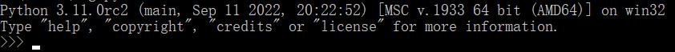

作者：张迅
目前python最新版本是python3.11, 本教程主要针对Python3.x版本的学习同时会涉及一点python2版本
Python的3.0版本, 常被称为Python3000, 或简称Py3k。相对于Python的早期版本, 这是一个较大的升级。为了不带入过多的累赘, Python3.0在设计的时候没有考虑向下兼容。官方宣布, 2020年1月1日, 停止Python2的更新。
以下为在Unix&Linux平台上安装Python的简单步骤:
1.打开浏览器访问 https://www.python.org/downloads/source/
2.选择适用于Unix/Linux的源码压缩包
3.下载及解压压缩包Python-3.x.x.tgz, 3.x.x为你下载的对应版本号。
检查Python3是否正常可用:
# python3 -V
输出:Python 3.X.X
浏览器访问https://www.python.org/downloads/windows/, 一般下载图中这两个之一, 32-bit表示是32位机子的, 64-bit表示64位机子的。
点击后等待下载完成。下载完成后双击打开。
1.勾选Add Python 3.X to PATH(这一步很重要，不要忘记)
2.选择自定义安装(点击Customize installation), 在这一步可以修改python安装的位置(一定记住路径)。其他步骤直接选择install。
3.等待下载完成后, 按windows+R键,在弹出的运行栏里输入cmd。
4.在cmd界面输入python。如果出现下图所示的内容, 即为安装成功。
MAC系统都自带有Python2.7环境, 你可以在https://www.python.org/downloads/mac-osx/上下载最新版安装Python3.x。
关于环境变量的问题, 如果你之前勾选Add Python 3.X to PATH这一步没有忘记的话, 一般都是已经配置完成了
如果你是新手, 我建议使用python解释器, 因为如果是其他功能比较强的强大的编辑器一般都有代码补全功能, 这对你的学习不是特别好, 在入门阶段, python解释器就够了。
作为一个新手，无非就是两种情况：看不懂、看不下去。(有基础除外)接下来这一部分主要讲怎么学?
第一步：坚定想法
首先需要明白，编程并不是要有高智商。只要想学，就都能学会，更何况是最简单的python呢，只不过是效率和未来发展不一样。如果想学，那么就此开始，不要半路而废。如果想退缩，左上角小x点一下退出去就可以了。
第二步：掌握时间
初学者一般的阅读时长在半小时左右就可以了，看的时间太长也看不下去，反而浪费时间。
第三步：学习方法
学习方法很重要，学习方法决定了事半功倍还是事倍功半，在学编程这个事情上最重要的就是多练(多练代码)、多闻(不会的一定要问或者上网搜)、多思考(学而不思则罔)。
接下来，就到第三章，正式开始你的python之路
第三章正在测试中，敬请期待......